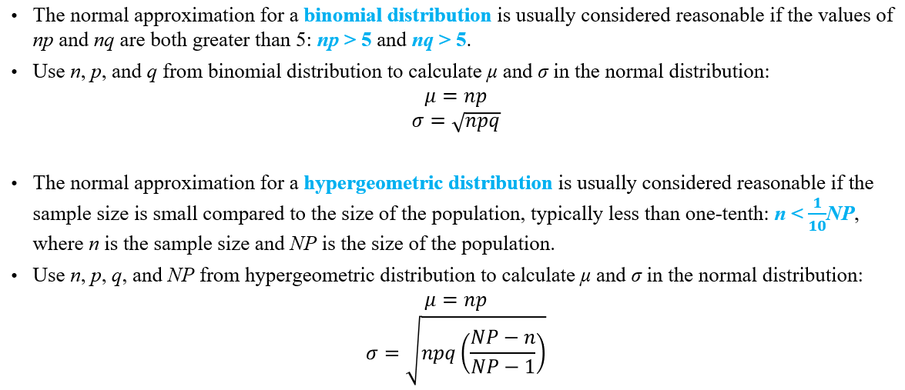

Discrete Random Variable has a finite or countable number of possible values.
Normal Distribution is often called a bell curve and is broadly utilized in statistics, business settings, and government entities such as the FDA. It's widely recognized as being a grading system for tests such as the SAT and ACT in high school or the GRE for graduate students.
Select each item to learn more.
It occurs naturally in numerous situations.
Data points are similar and occur within a small range.
Much fewer outliers on the low and high ends of the data range.
Can be utilized to model risks and follow the distribution of likely outcomes for certain events, like the amount of next month's revenue from a specific service.
Process variations in operations management are sometimes normally distributed, as is employee performance in Human Resource Management.
Human Resource management applies Normal Distribution to employee performance.
The binomial distribution is considered the likelihood of a pass or fail outcome in a survey or experiment that is replicated numerous times. There are only two potential outcomes for this type of distribution, like a True or False, or Heads or Tails.
Select each item to learn more.
First variable: The number of times an experiment is conducted.
Second variable: Probability of a single, particular outcome.
The probability of an occurrence can only be determined if it's done a number of times.
None of the performed trials have any effect on the probability of the following trial.
The likelihood of success is the same from one trial to the following trial.
Banks and other financial institutions use Binomial Distribution to determine the likelihood of borrowers defaulting, apply the number towards pricing insurance, and figure out how much money to keep in reserve, or how much to loan.
Hypergeometric Distribution is a discrete probability distribution that describes the probability of k successes (random draws for which the object drawn has a specified feature) in n draws, without replacement, from a finite population of size N that contains exactly K objects with that feature, wherein each draw is either a success or a failure.
Select each item to learn more.
The result of each draw (the elements of the population being sampled) can be classified into one of two mutually exclusive categories. (Example: Pass/Fail or Employed/Unemployed).
The probability of success changes on each draw, as each draw decreases the population (sampling without replacement from a finite population).
Election audits typically test a sample of machine-counted precincts to see if recounts by hand or machine match the original counts. Mismatches result in either a report or a larger recount. The sampling rates are usually defined by law, not statistical design, so for a legally defined sample size n, what is the probability of missing a problem that is present in K precincts, such as a hack or bug?
